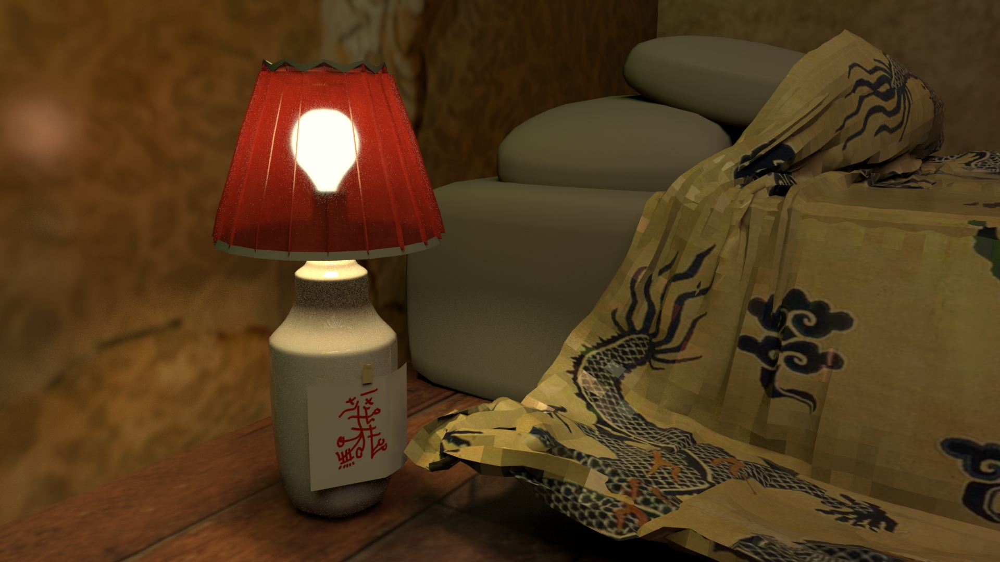
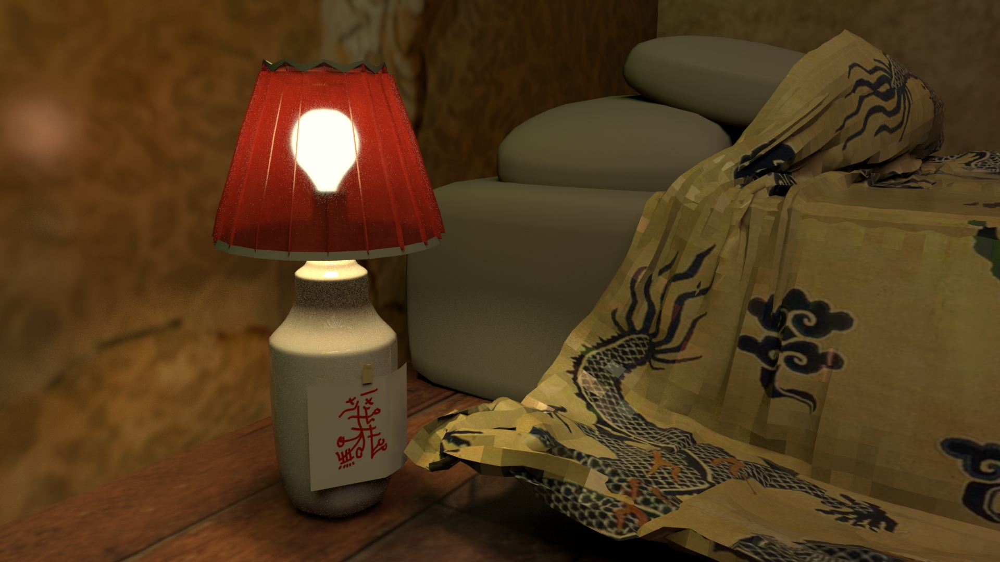

SHY IN JAKARTA
Shy in Jakarta is a multimedia installation and recording project engaging sound art, poetry and multichannel video to address problems of Chinese diaspora, identity and self-concept. The work focuses primarily on a 45-minute experimental audio piece that is crafted as a studio recording. The piece will be performed live within the world of a 3-channel video that is projection mapped onto the walls of a theater to create convex extensions into space. The videos are constructed from 3D renderings of an imaginary room and incorporate sculptural animation, live footage, and visual synthesis. Shy in Jakarta seeks to build an aural, visual and virtual space that draws material equally from inherited trauma memory and collective cultural narratives, in order to better understand the simultaneity of appropriated and experiential realities in an oblique encounter with the self.

The installation draws from my experience as a first generation Chinese American woman, resulting from ancestral diaspora throughout Asia spurred by war. The name Shy in Jakarta derives from childhood memories of being told bedtime stories by my mother about her childhood. Born in Jakarta to refugees of the Cultural Revolution, she internalized a relatively brief yet vivid experience of a place that she was not ethnically native to and which she again had to flee during the Indonesian Mass Killings of 1965-66.
Drawing from the notion that the Indonesian Chinese genocide resulted from conflation of Communist sympathy with Chinese ethnicity, this piece seeks to explore the intersections of racial identity and iconography, of cultural material and propaganda. The goal of the project is to integrate and explore cultural memory and racial myth and iconography. As we at once become increasingly sensitive and desensitized to a longstanding national tradition of cultural appropriation as appreciation, and begin to deconstruct the ever-present white gaze in the American socio political discourse, I want to address how these histories are still operative in my self-concept as a Chinese American.


While Shy in Jakarta can be performed live as a multi-media, spatial experience, it is first and foremost an audio piece. Using a foundation of sound to engender a heightened exploration of ambiguous psycho-emotional space, Shy in Jakarta draws inspiration from musique concrete, poetry, ambient and experimental styles, highlighting the both somatic and ethereal nature of experience and memory. Utilizing analog audio synthesis and digital manipulation of raw sonic material, it will incorporate additional poetic vocals and field recordings into the soundscapes at times to weave in the presence of narrative and place.
Playing with how music and sound have the power to act as ether, synthesizing space and disparate objects within it into a narrative, cinematic experience, the piece speaks to the constructed nature of identity and the elements with which identities are constructed. The room is dingy yet full of possibility. Fictitious Chinese characters are scrawled on the wall of the imaginary room and on disparate notes to self. Small details are inconsistent among the disparate versions of the room shown by each of the 3 video channels, suggesting the dreamlike nature of memory as it pieces things together subjectively, spatially, and nonlinearly— piece-by-piece, rather than objectively and holistically. Moving video elements appear, disappear, and reappear throughout the diegetic location of the piece. These are 'ghosts' of sorts– ephemeral energies and emotions that, as they pass through, temporarily direct meaning to the space and objects of the world. Similarly, the mirrors and doubles in the installation remind us of the contradictions inherent in living a non-white American identity.
 

Three-dimensionality functions in the piece both in the rendering of the imaginary room, as well as in the way it is installed in the live setting. The work is interested in 3D as a medium as it functions as a space of contradiction. Symbolically, three-dimensionality functions both as an analog for individuation and transcendence of cultural archetype, but also for simulation and identity as a construction via collectively narrated parameters of reality. The artwork expresses that there is no way for identity to be simulated without containing measures of both.
The imaginary room in the videos is very loosely inspired by an imagining of the bedroom of Mata Hari, a famous early 20th century Dutch orientalist socialite and performance artist. In beginning to layer in the details of the room, I came to appreciate the irony that exoticized Chinese material and its implications are as much a part of my self-understanding as direct experience, childhood and familial memory. The videos, projection-mapped onto three walls of a box theater, look as though they project outward into extendable space, bleeding together the personal and social, the inner and outer. This is the effect of fusion: the smearing of identity.